What are the factors that contribute to salary variations in the data science job market, considering job titles, seniority levels, and company sizes?
Introduction
This research project delves into the data science job market to unravel the factors contributing to salary variations. By analyzing a comprehensive dataset encompassing job titles, seniority levels, and company sizes, the study aims to shed light on the current trends and patterns within the field. Through examining the distribution of job titles, seniority levels, salaries, and employment types, valuable insights can be gained regarding the prevalent roles, requisite skills, and experience sought after in data science. Moreover, investigating the geographical locations and company sizes can offer valuable information about the leading regions and the hiring preferences of data science companies. Ultimately, this project strives to provide actionable insights to job seekers, employers, and researchers, enriching their understanding of the data science job market
Loading Necessary Packages
Code
pacman ::p_load(pacman,stats, dplyr, knitr, ggplot2, plotly, psych, gridExtra, waffle, emojifont,tidyr, tidytext, wordcloud, GGally, viridis, tidyverse, rnaturalearth, rnaturalearthdata) options(warn=-1) # warnings will be suppressed and will not be displayed in the console or any output
Data Reading
Code
df <-read.table("_data/ds_salaries.csv", sep =",", header = T)# Nr. of instancescat("Number of instances:", nrow(df))
Number of instances: 3755
Code
# View datahead(df, 10)
work_year experience_level employment_type job_title salary
1 2023 SE FT Principal Data Scientist 80000
2 2023 MI CT ML Engineer 30000
3 2023 MI CT ML Engineer 25500
4 2023 SE FT Data Scientist 175000
5 2023 SE FT Data Scientist 120000
6 2023 SE FT Applied Scientist 222200
7 2023 SE FT Applied Scientist 136000
8 2023 SE FT Data Scientist 219000
9 2023 SE FT Data Scientist 141000
10 2023 SE FT Data Scientist 147100
salary_currency salary_in_usd employee_residence remote_ratio
1 EUR 85847 ES 100
2 USD 30000 US 100
3 USD 25500 US 100
4 USD 175000 CA 100
5 USD 120000 CA 100
6 USD 222200 US 0
7 USD 136000 US 0
8 USD 219000 CA 0
9 USD 141000 CA 0
10 USD 147100 US 0
company_location company_size
1 ES L
2 US S
3 US S
4 CA M
5 CA M
6 US L
7 US L
8 CA M
9 CA M
10 US M
The dataset contains information about various data science roles, salaries, employment details, and company characteristics from 2021 to 2023.
It allows for analysis of salary trends, comparison of salaries across job titles and experience levels, examination of the prevalence of different employment types and remote work, and exploration of the geographic distribution and company sizes within the data science field.
work_year: This column indicates the year in which the salary was paid to the employee. It allows us to analyze trends in salaries over time and compare salaries between different years.
experience_level: This column indicates the experience level of the employee in the job during the year. It allows us to analyze how experience level affects salaries and identify common experience levels for different job titles.
employment_type: This column indicates the type of employment for the role, whether it is Contract, Freelance, Full-Time, or Part-Time. It allows us to analyze the prevalence of different employment types in the data science field.
job_title: This column indicates the role worked in during the year. It allows us to analyze the most common job titles in the data science field and identify trends in job titles over time.
salary: This column indicates the total gross salary amount paid to the employee in the specified currency. It allows us to analyze salary ranges, identify outliers, and compare salaries between different job titles and experience levels.
salary_currency: This column indicates the currency of the salary paid as an ISO 4217 currency code. It allows us to convert salaries to a common currency for analysis and comparison.
salaryinusd: This column indicates the salary in USD. It allows us to compare salaries in a common currency and analyze the impact of currency exchange rates on salaries.
employee_residence: This column indicates the employee’s primary country of residence during the work year as an ISO 3166 country code. It allows us to analyze the geographic distribution of employees and identify common countries of residence for different job titles and experience levels.
remote_ratio: This column indicates the overall amount of work done remotely by the employee during the year. It allows us to analyze the prevalence of remote work in the data science field and identify common remote work ratios for different job titles and experience levels.
company_location: This column indicates the country of the employer’s main office or contracting branch. It allows us to analyze the geographic distribution of companies and identify common countries where data science jobs are located.
company_size: This column indicates the median number of people that worked for the company during the year. It allows us to analyze the size distribution of companies and identify common company sizes for different job titles and experience levels.
data <-data.frame(category=c("2020", "2021", "2022", "2023"),count=c(76, 230, 1664, 1785))# Compute percentagesdata$fraction <- data$count /sum(data$count)# Compute the cumulative percentages (top of each rectangle)data$ymax <-cumsum(data$fraction)# Compute the bottom of each rectangledata$ymin <-c(0, head(data$ymax, n=-1))# Compute label positiondata$labelPosition <- (data$ymax + data$ymin) /2# Compute a good labeldata$label <-paste0(round(data$fraction*100, 1), "%")wy_piechart <-ggplot(data, aes(ymax=ymax, ymin=ymin, xmax=4, xmin=3, fill=category)) +geom_rect() +geom_label( x=3.5, aes(y=labelPosition, label=label), size=6) +ggtitle("Pie Chart for Work Year") +scale_fill_manual(values = my_palette) +coord_polar(theta="y") +theme_void() +labs(fill ="Year") +theme(plot.title =element_text(color ="#383335", size =20, face ="bold"))wy_barchart
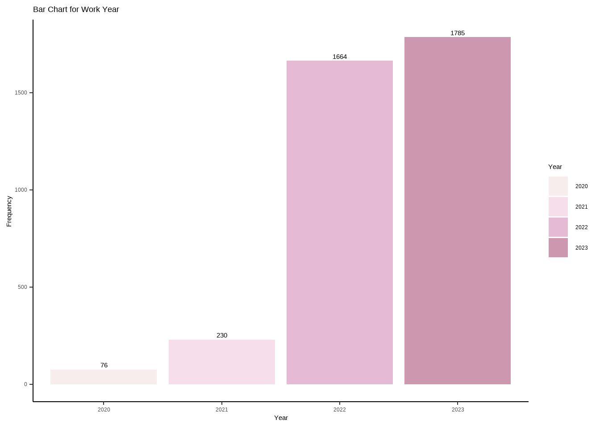
Code
wy_piechart
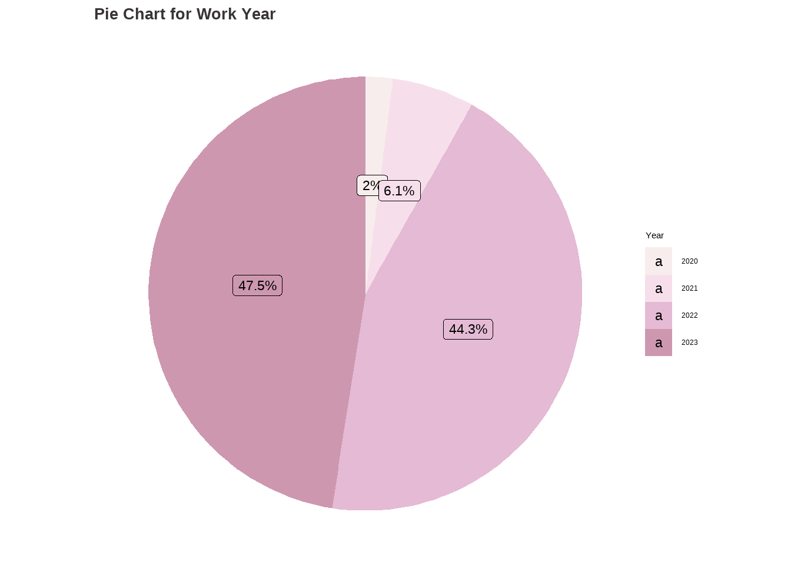
Findings:
The dataset indicates that the majority of observations, around 47.54% (1785), are from the year 2023, followed by 44.31% (1664) from 2022. A smaller percentage, 6% (230), corresponds to the year 2021, while only 2% (76) corresponds to the year 2020.
Analysis for Experience Level
Code
# Analysis for experience_level ## table(df$experience_level)el_categ <-as.factor(ifelse(df$experience_level =='EN', 'Entry-level',ifelse(df$experience_level =='MI', 'Mid-level', ifelse(df$experience_level =='SE', 'Senior-level', ifelse(df$experience_level =='EX', 'Executive-level', '')))))options(repr.plot.width=16, repr.plot.height=8)my_palette <-c("#FFF2F2", "#E5E0FF", "#8EA7E9", "#7286D3")el_barchart <-ggplot(data.frame(el_categ), aes(x = el_categ)) +geom_bar(aes(fill = el_categ)) +scale_fill_manual(values = my_palette) +ggtitle("Bar Chart for Experience Level") +xlab("Level") +ylab("Frequency") +labs(fill ="Level") +stat_count(geom ="text", aes(label =after_stat(count)), vjust =-0.5) +theme_classic() +theme(plot.title =element_text(color ="#383335", size =20, face ="bold"),plot.subtitle =element_text(color ="#F6CD90",size =12, face ="bold"),plot.caption =element_text(face ="italic"))data <-data.frame(category=c("Entry-level", "Mid-level", "Senior-level", "Executive-level"),count=c(320, 805, 2516, 114))# Compute percentagesdata$fraction <- data$count /sum(data$count)# Compute the cumulative percentages (top of each rectangle)data$ymax <-cumsum(data$fraction)# Compute the bottom of each rectangledata$ymin <-c(0, head(data$ymax, n=-1))# Compute label positiondata$labelPosition <- (data$ymax + data$ymin) /2# Compute a good labeldata$label <-paste0(round(data$fraction*100, 1), "%")el_piechart <-ggplot(data, aes(ymax=ymax, ymin=ymin, xmax=4, xmin=3, fill=category)) +geom_rect() +geom_label( x=3.5, aes(y=labelPosition, label=label), size=6) +ggtitle("Pie Chart for Experience Level") +scale_fill_manual(values = my_palette) +coord_polar(theta="y") +theme_void() +labs(fill ="Level") +theme(plot.title =element_text(color ="black", size =20, face ="bold"))el_barchart
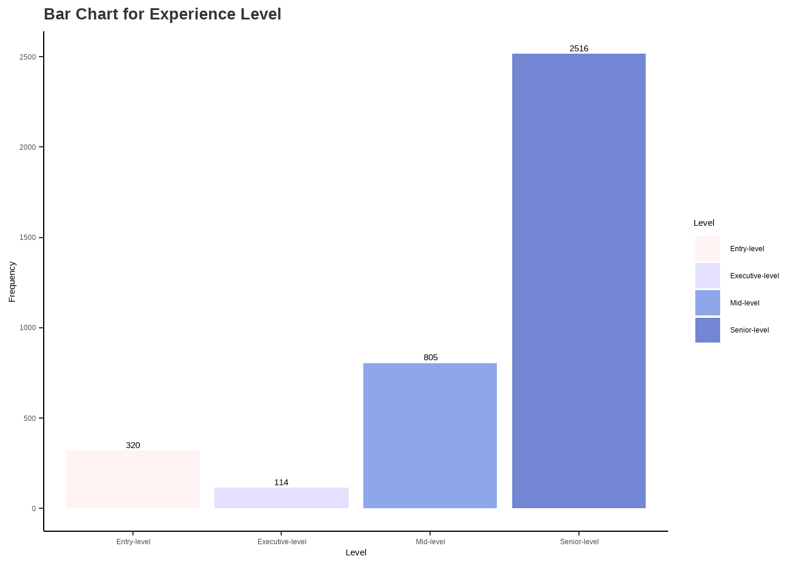
Code
el_piechart
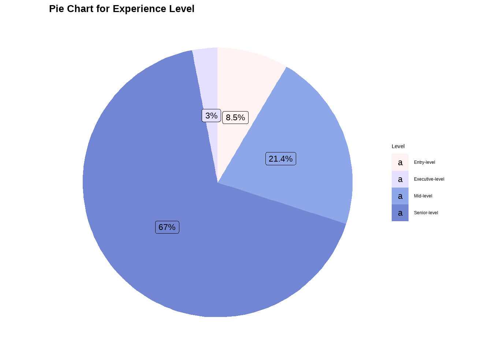
Findings:
The dataset includes four seniority levels, with the Senior-level category having the most representation with 67% (2516), followed by the Mid-level category with 21.4%(805). The Entry-level category is the next in terms of representation with 8.5%(320), while the Executive-level category has the least representation with only 3%(114).
# Compute the top 20 job titles in descending ordertop20_job_titles <-head(sort(table(df$job_title), decreasing = T), 10)# Create a bar plot with plotlyplot_ly(x = top20_job_titles, y =names(top20_job_titles), type ="bar",text = top20_job_titles, orientation ='h', marker =list(color ="#2f3e46")) %>%layout(title ="Top 20 Jobs in Data Science", xaxis =list(title ="Count"), yaxis =list(title ="Job Title"))
Findings:
Among the 93 job titles present in the dataset, the most commonly occurring ones are as follows:
Data Engineer, with a count of 1040 occurrences. Data Scientist, with a count of 840 occurrences. Data Analyst, with a count of 612 occurrences. Machine Learning Engineer, with a count of 289 occurrences.
These job titles represent the top four most frequently observed roles in the dataset.
Analysis for Salary
Code
# Analysis for salary_in_usd #options(scipen =999)# Central Tendencies# Meancat("Mean:", mean(df$salary_in_usd))
Mean: 137570.4
Code
cat("\n")
Code
# Mediancat("Median:", median(df$salary_in_usd))
Median: 135000
Code
cat("\n")
Code
# Modemode <-function(x){ ta <-table(x) tam <-max(ta)if(all(ta==tam)) mod <-NAelseif(is.numeric(x)) mod <-as.numeric(names(ta)[ta==tam])else mod <-names(ta)[ta==tam]return(mod)}cat("Mode:", mode(df$salary_in_usd))
Mode: 100000
Code
cat("\n")
Code
# Measure of Variability# Std. Devcat("Standard Deviation:", sd(df$salary_in_usd))
options(repr.plot.width=18, repr.plot.height=6) require(gridExtra)salary_hist <-ggplot(df, aes(x = salary_in_usd)) +geom_histogram(color ='#5c082c', fill ='#F5B0CB', bins=30) +labs(title ="Histogram for Salary ($)",x ="Salary",y ="Count") +theme_classic() +theme(plot.title =element_text(color ="#383335", size =20, face ="bold"),plot.subtitle =element_text(color ="#F5B0CB",size =12, face ="bold"),plot.caption =element_text(face ="italic"))salary_boxplot <-ggplot(df, aes_string(x = df$salary_in_usd)) +geom_boxplot(outlier.colour ="#F5B0CB", outlier.shape =11, outlier.size =2, col ="#5c082c", notch = F) +labs(title ="Box Plot for Salary ($)",x ="Salary") +theme_classic() +theme(plot.title =element_text(color ="#383335", size =20, face ="bold"))salary_hist
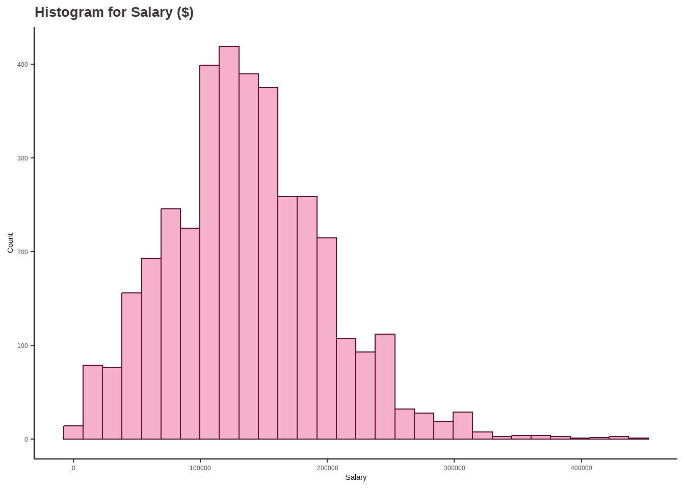
Code
salary_boxplot
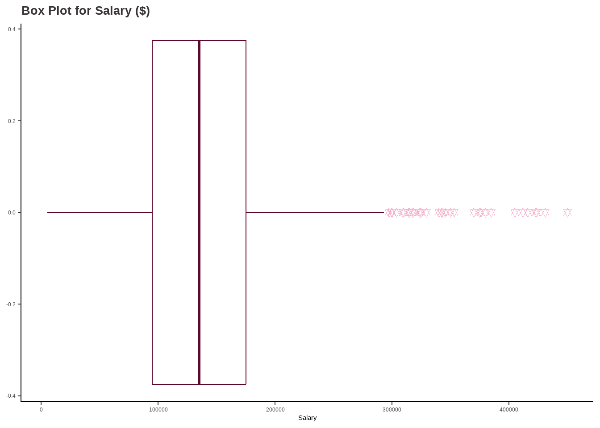
Code
plot(density(df$salary_in_usd),col="#F5B0CB",main="Density Plot for Salary",xlab="Salary",ylab="Density")polygon(density(df$salary_in_usd),col="#F5B0CB")
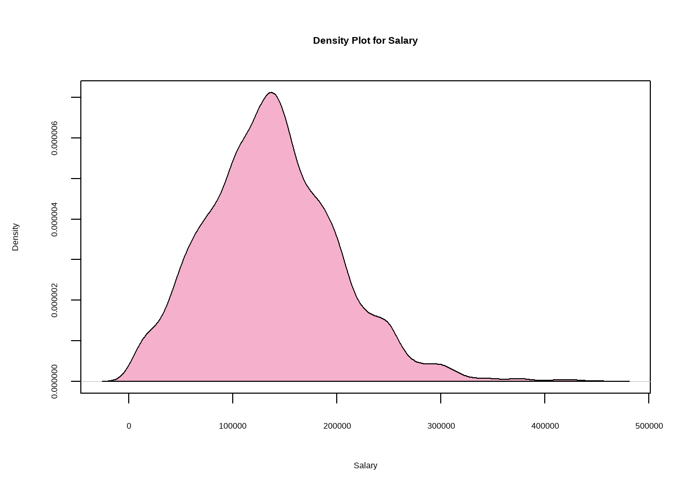
Code
# Define the summary statisticsmean_val <-137570.4median_val <-135000mode_val <-100000std_dev <-63055.63variance <-3976011879quantiles <-c(5132, 95000, 135000, 175000, 450000)# Create a data frame to store the summary statisticssummary_df <-data.frame(Measure =c("Mean", "Median", "Mode", "Standard Deviation", "Variance", "Interquartile Range"),Value =c(mean_val, median_val, mode_val, std_dev, variance, paste(quantiles, collapse =" ")))# Print the summary statistics in a boxprint(summary_df, row.names =FALSE)
Measure Value
Mean 137570.4
Median 135000
Mode 100000
Standard Deviation 63055.63
Variance 3976011879
Interquartile Range 5132 95000 135000 175000 450000
Findings:
The range of salaries in the Data Science domain is between 5,132 USD and 450,000 USD. Moreover, the average or mean salary in this field is around 137,570 USD. This information suggests that there is a wide range of salaries in the field of Data Science, with some individuals earning significantly more than others.
Analysis for Employment Type
Code
# Analysis for employment_type ## table(df$employment_type)et_categ <-as.factor(ifelse(df$employment_type =="CT", "Contract",ifelse(df$employment_type =="FL", "Freelance", ifelse(df$employment_type =="FT", "Full-Time", ifelse(df$employment_type =="PT", "Part-Time", "")))))options(repr.plot.width=16, repr.plot.height=8)my_palette <-c("#FEDEFF", "#93C6E7", "#AEE2FF", "#B9F3FC")et_barchart <-ggplot(data.frame(et_categ), aes(x = et_categ)) +geom_bar(aes(fill = et_categ)) +scale_fill_manual(values = my_palette) +ggtitle("Bar Chart for Employment Type") +xlab("Type") +ylab("Frequency") +labs(fill ="Level") +stat_count(geom ="text", aes(label =after_stat(count)), vjust =-0.5) +theme_classic() +theme(plot.title =element_text(color ="#383335", size =20, face ="bold"),plot.subtitle =element_text(color ="#F6CD90",size =12, face ="bold"),plot.caption =element_text(face ="italic"))data <-data.frame(category=c("Contract", "Freelance", "Full-Time", "Part-Time"),count=c(10, 10, 3718, 17))# Compute percentagesdata$fraction <- data$count /sum(data$count)# Compute the cumulative percentages (top of each rectangle)data$ymax <-cumsum(data$fraction)# Compute the bottom of each rectangledata$ymin <-c(0, head(data$ymax, n=-1))# Compute label positiondata$labelPosition <- (data$ymax + data$ymin) /2# Compute a good labeldata$label <-paste0(round(data$fraction*100, 1), "%")et_piechart <-ggplot(data, aes(ymax=ymax, ymin=ymin, xmax=4, xmin=3, fill=category)) +geom_rect() +geom_label( x=3.5, aes(y=labelPosition, label=label), size=6) +ggtitle("Pie Chart for Employment Type") +scale_fill_manual(values = my_palette) +coord_polar(theta="y") +theme_void() +labs(fill ="Type") +theme(plot.title =element_text(color ="#383335", size =20, face ="bold"))et_barchart
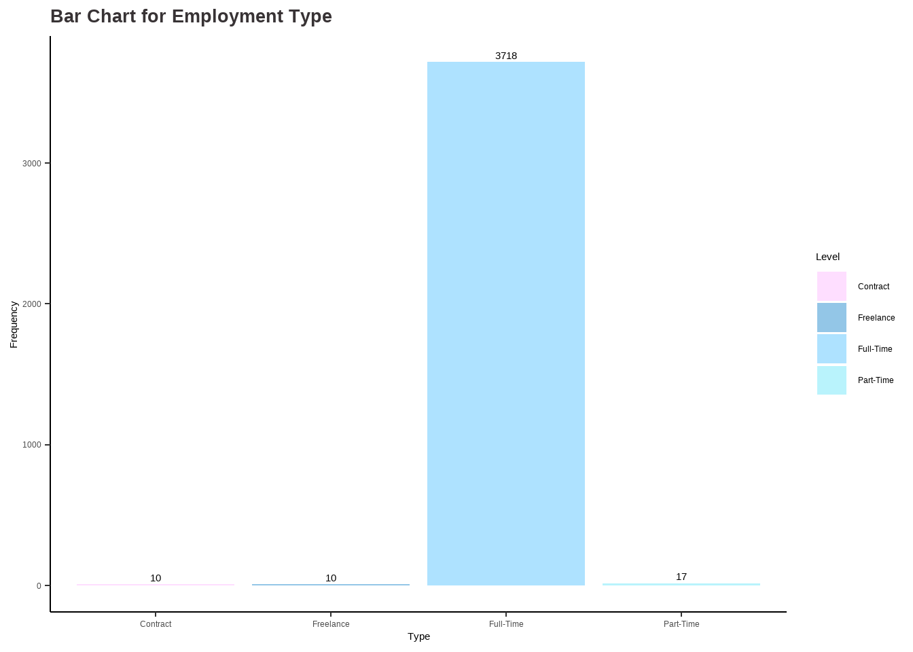
Code
et_piechart
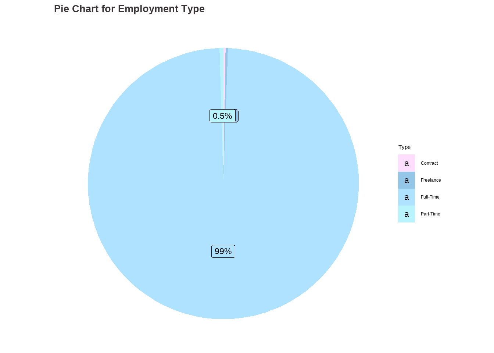
Findings:
The dataset includes data on four types of employment: Contract, Freelance, Full-Time, and Part-Time. Based on the graphs, it is clear that the majority of people who contributed to the dataset are employed on a Full-Time basis. This information indicates that Full-Time employment is the most common form of employment for those in the Data Science field.
Analysis for % Remote Work
Code
# Analysis for remote_ratio ## table(df$remote_ratio)rr_categ <-as.factor(ifelse(df$remote_ratio ==0, "On-site",ifelse(df$remote_ratio ==50, "Hybrid", ifelse(df$remote_ratio ==100, "Remote", ""))))options(repr.plot.width=16, repr.plot.height=8)my_palette <-c("#f0dfd1", "#f0c9a8", "#edb482")rr_barchart <-ggplot(data.frame(rr_categ ), aes(x = rr_categ)) +geom_bar(aes(fill = rr_categ )) +scale_fill_manual(values = my_palette) +labs(fill ="Type") +stat_count(geom ="text", aes(label =after_stat(count)), vjust =-0.5) +labs(title ="Bar Chart for % Remote Work",x ="Type", y="Frequency") +theme_classic() +theme(plot.title =element_text(color ="#383335", size =20, face ="bold"),plot.subtitle =element_text(color ="#F6CD90",size =12, face ="bold"),plot.caption =element_text(face ="italic"))data <-data.frame(category=c("On-site", "Hybrid", "Remote"),count=c(1923, 189, 1643))# Compute percentagesdata$fraction <- data$count /sum(data$count)# Compute the cumulative percentages (top of each rectangle)data$ymax <-cumsum(data$fraction)# Compute the bottom of each rectangledata$ymin <-c(0, head(data$ymax, n=-1))# Compute label positiondata$labelPosition <- (data$ymax + data$ymin) /2# Compute a good labeldata$label <-paste0(round(data$fraction*100, 1), "%")rr_piechart <-ggplot(data, aes(ymax=ymax, ymin=ymin, xmax=4, xmin=3, fill=category)) +geom_rect() +geom_label( x=3.5, aes(y=labelPosition, label=label), size=6) +ggtitle("Pie Chart for % Remote Work") +scale_fill_manual(values = my_palette) +coord_polar(theta="y") +theme_void() +labs(fill ="Type") +theme(plot.title =element_text(color ="#383335", size =20, face ="bold"))rr_barchart
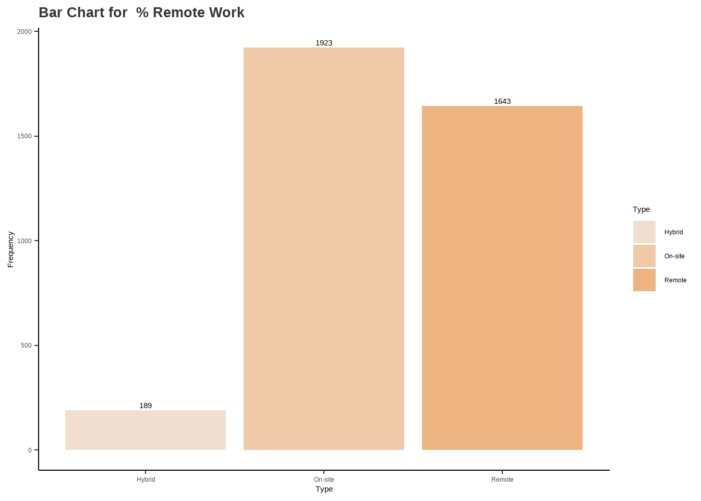
Code
rr_piechart
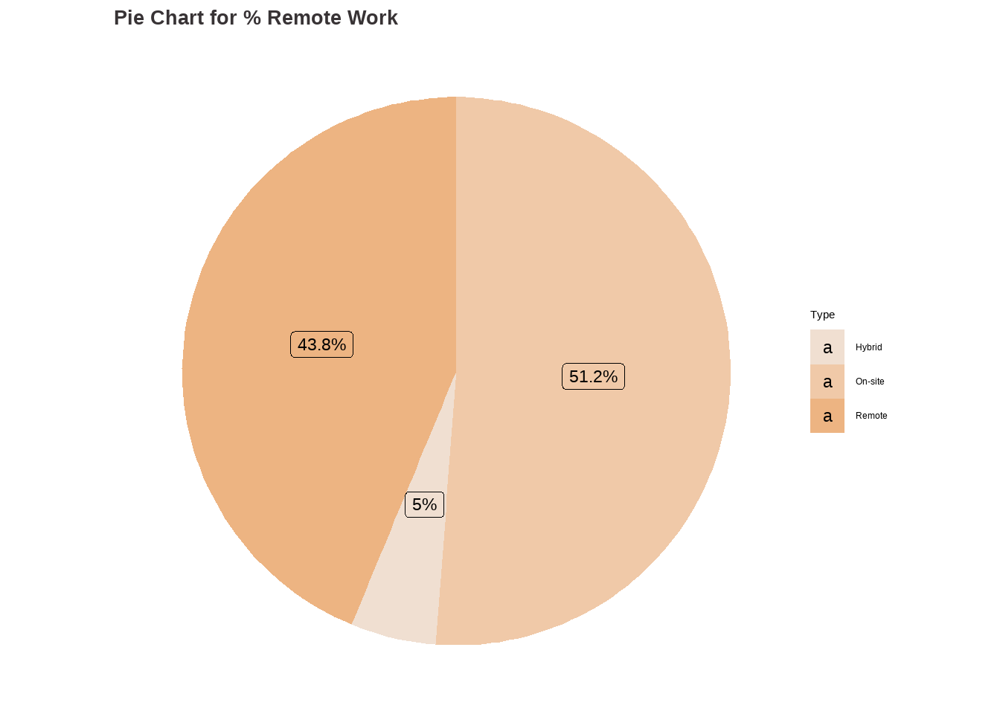
Findings:
According to the dataset, approximately 51.2% (1923 observations) of individuals are working On-site, which means they are working at a physical location provided by their employer. Around 43.8% (1643 observations) of people are working in remote mode. Finally, 5% (189 observations) of individuals are working hybrid. This information suggests that a significant portion of the individuals in the Data Science field have some level of flexibility in their work arrangements.
Analysis for Companies Size
Code
# Analysis for company_size ## table(df$company_size)cs_categ <-as.factor(ifelse(df$company_size =="L", "Large",ifelse(df$company_size =="M", "Medium", ifelse(df$company_size =="S", 'Small', ''))))options(repr.plot.width=16, repr.plot.height=8)my_palette <-c("#C8E3D4", "#96C7C1", "#89B5AF")cs_barchart <-ggplot(data.frame(cs_categ ), aes(x = cs_categ)) +geom_bar(aes(fill = cs_categ )) +scale_fill_manual(values = my_palette) +ggtitle("Bar Chart for Companies Size") +xlab("Size") +ylab("Frequency") +labs(fill ="Type") +stat_count(geom ="text", aes(label =after_stat(count)), vjust =-0.5) +theme_classic() +theme(plot.title =element_text(color ="#383335", size =20, face ="bold"),plot.subtitle =element_text(color ="#F6CD90",size =12, face ="bold"),plot.caption =element_text(face ="italic"))data <-data.frame(category=c("Large", "Medium", "Small"),count=c(454, 3153, 148))# Compute percentagesdata$fraction <- data$count /sum(data$count)# Compute the cumulative percentages (top of each rectangle)data$ymax <-cumsum(data$fraction)# Compute the bottom of each rectangledata$ymin <-c(0, head(data$ymax, n=-1))# Compute label positiondata$labelPosition <- (data$ymax + data$ymin) /2# Compute a good labeldata$label <-paste0(round(data$fraction*100, 1), "%")cs_piechart <-ggplot(data, aes(ymax=ymax, ymin=ymin, xmax=4, xmin=3, fill=category)) +geom_rect() +geom_label( x=3.5, aes(y=labelPosition, label=label), size=6) +ggtitle("Pie Chart for Companies Size") +scale_fill_manual(values = my_palette) +coord_polar(theta="y") +theme_void() +labs(fill ="Size") +theme(plot.title =element_text(color ="#383335", size =20, face ="bold"))cs_barchart
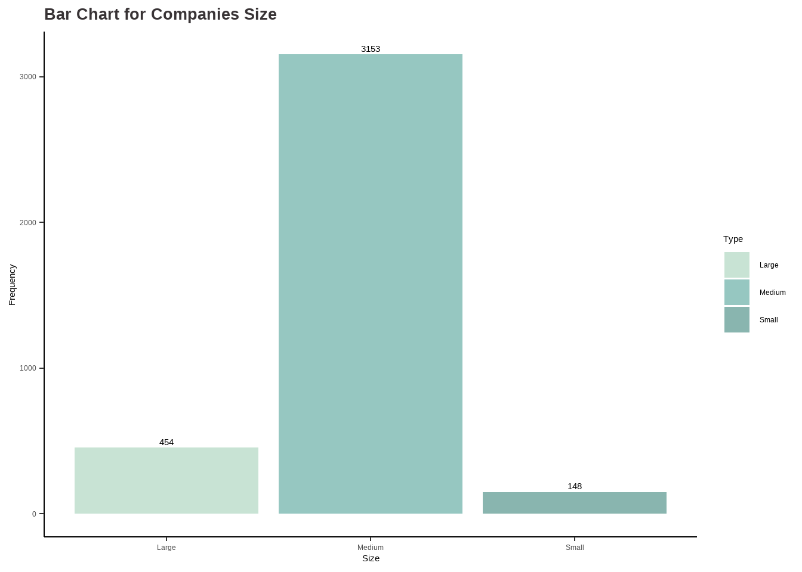
Code
cs_piechart
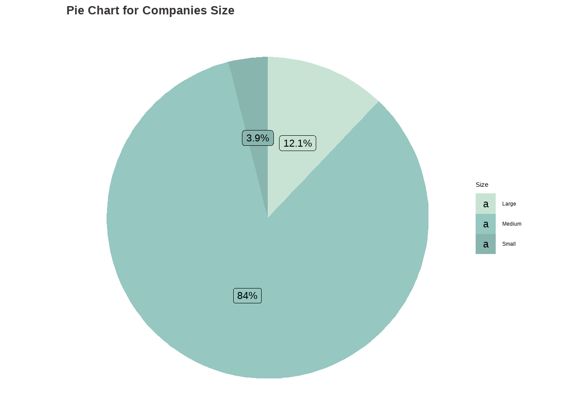
Findings:
A large portion of the companies, around 84% (3153 observations), are categorized as Medium size. Additionally, 12.1% (454 observations) of the companies are classified as Large size, while only 3.9% (148 observations) are considered Small size. This implies that the majority of the companies in the dataset have a medium-sized workforce.
Analysis for Company Location
Code
# Analysis for company_location ## table(df$company_location)cat("The dataset grasps", length(unique(df$company_location))," distinct company locations.")
The dataset grasps 72 distinct company locations.
Code
# Compute the top 20 company locations in descending ordertop20_company_location <-head(sort(table(df$company_location), decreasing = T), 20)# Create a bar plot with plotlyplot_ly(x = top20_company_location, y =names(top20_company_location), type ="bar",text = top20_job_titles, orientation ='h', marker =list(color ="#0d1b2a ")) %>%layout(title ="Top 20 Data Science Company Locations", xaxis =list(title ="Count"), yaxis =list(title ="Company Location"))
Findings:
The dataset contains information on 72 unique company locations. Upon analyzing the data, it was found that the majority of companies are based in the United States, with the highest number of observations. Great Britain, Canada, Spain, and India are the next most common locations where companies are based, respectively.
The dataset grasps 78 distinct employees residence.
Code
# Compute the top 20 employees residence in descending ordertop20_employee_residence <-head(sort(table(df$employee_residence), decreasing = T), 20)# Create a bar plot with plotlyplot_ly(x = top20_employee_residence, y =names(top20_employee_residence), type ="bar",text = top20_job_titles, orientation ='h', marker =list(color ="#0d1b2a")) %>%layout(title ="Top 20 Data Science Employees Residence", xaxis =list(title ="Count"), yaxis =list(title ="Employee Residence"))
Findings:
The dataset includes information on the primary country of residence for employees, with a total of 78 countries represented. The highest number of employees reside in the United States, followed by Great Britain, Canada, Spain, and India, indicating that these countries have a higher concentration of data science jobs or are preferred locations for employees in this field.
Multivariate Analysis
Analysis for Salary by Year
Code
options(scipen =999)options(repr.plot.width=20, repr.plot.height=10) require(gridExtra)my_palette <-c("#94d2bd", "#c8b6ff", "#ffb3c6", "#fb6f92")wy_sl_boxplot <-ggplot(df, aes(x=wy_categ, y=salary_in_usd)) +geom_boxplot(fill=my_palette,outlier.colour ="#001219", outlier.shape =11, outlier.size =2, col = my_palette, notch = F) +labs(title ="Distribution of Salaries by Year",x="Year",y="Salary($)") wy_sl_hist <-ggplot(df, aes(x=salary_in_usd, fill=wy_categ)) +geom_histogram(color="black", bins =30) +labs(title ="Distribution of Salaries by Year",x="Salary", y="Frequency",fill="Year") +scale_fill_manual(values =c("#ffe5ec", "#ffb3c6", "#ff8fab", "#fb6f92")) wy_sl_boxplot
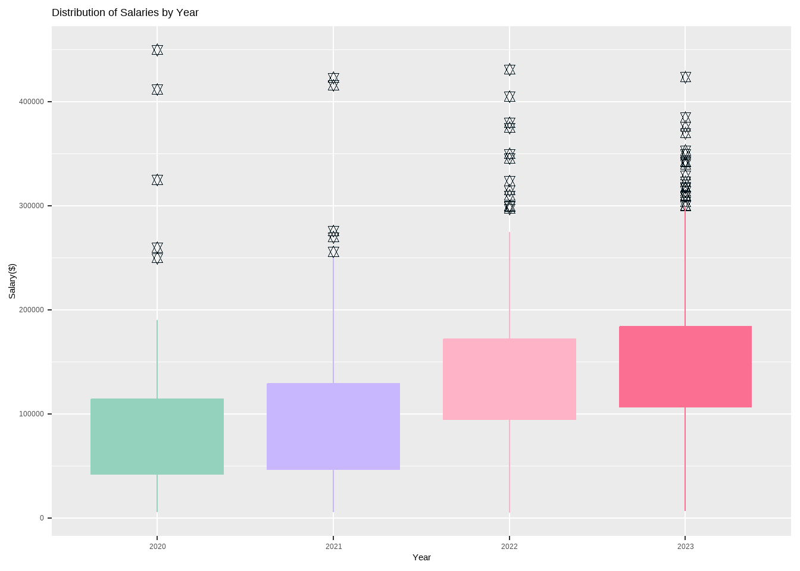
Code
wy_sl_hist
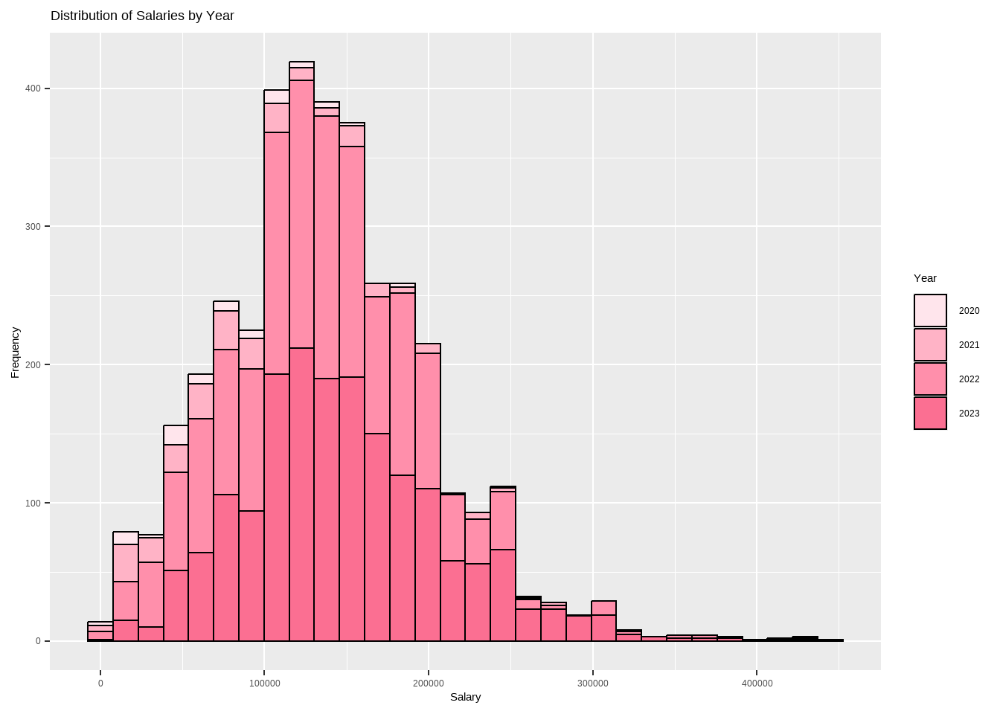
The dataset clearly indicates that the salaries in the Data Science domain have been increasing year on year, with a significant rise in 2022. This trend is expected to continue in 2023 as well.
Dataset indicates that the average executive-level salaries are higher than those of entry-level, mid-level, and senior-level positions with an average of 140k to more than 200k per year, while senior level salaries are in between 120k to 180k.
Analysis for Salary by Employment Type
Code
options(scipen =999)options(repr.plot.width=20, repr.plot.height=10) require(gridExtra)my_palette <-c("#03045e", "#023e8a", "#0096c7", "#48cae4")et_sl_boxplot <-ggplot(df, aes(x=et_categ, y=salary_in_usd)) +geom_boxplot(fill=my_palette,outlier.colour ="#023e8a", outlier.shape =11, outlier.size =2, col = my_palette, notch = F) +labs(title ="Distribution of Salaries by Employment Type",x="Type",y="Salary($)")et_sl_hist <-ggplot(df, aes(x=salary_in_usd, fill=et_categ)) +geom_histogram(color="black", bins =30) +labs(title ="Distribution of Salaries by Employment Type",x="Salary", y="Frequency",fill="Type") +scale_fill_manual(values =c("#03045e", "#023e8a", "#0096c7", "#48cae4")) et_sl_boxplot
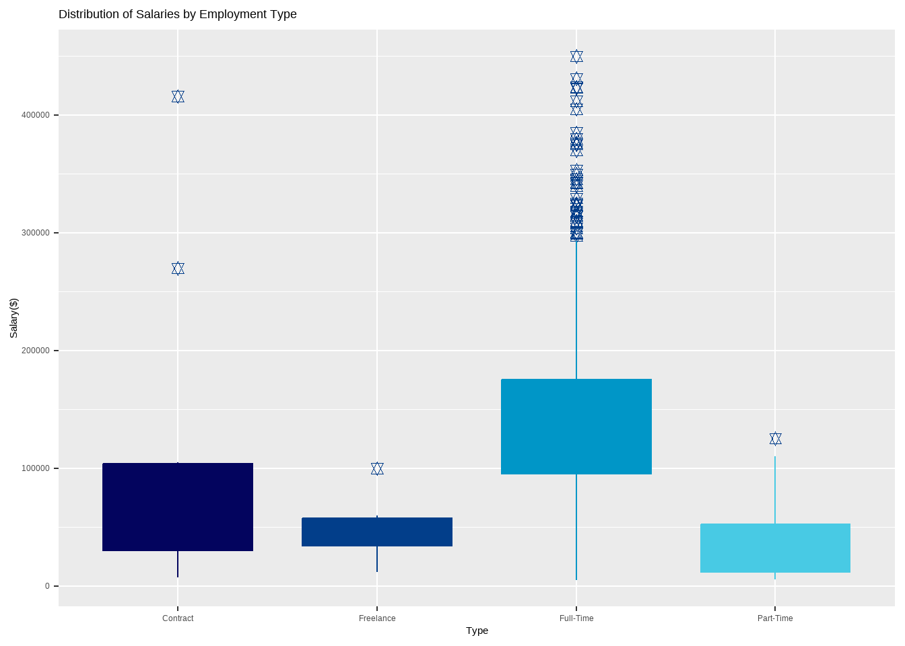
Code
et_sl_hist
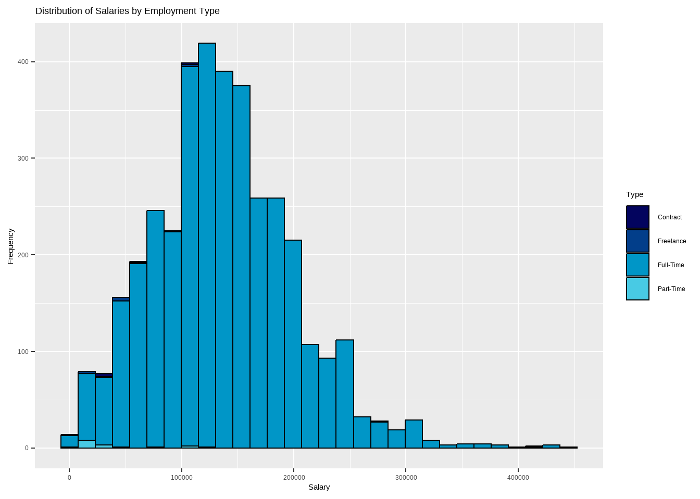
The data reveals that full-time employees are paid higher salaries compared to other employment types such as contract, freelance and part-time. Freelancers have an average annual salary of around 50 to 60k USD, while most number of part-time employees receive less than 50k USD per year.
Analysis for Salary by Company Size
Code
options(scipen =999)options(repr.plot.width=20, repr.plot.height=10) require(gridExtra)my_palette <-c("#C8E3D4", "#96C7C1", "#89B5AF")cs_sl_boxplot <-ggplot(df, aes(x=cs_categ, y=salary_in_usd)) +geom_boxplot(fill=my_palette,outlier.colour ="#305F72", outlier.shape =11, outlier.size =2, col = my_palette, notch = F) +labs(title ="Distribution of Salaries by Company Size",x="Size",y="Salary($)") cs_sl_hist <-ggplot(df, aes(x=salary_in_usd, fill=cs_categ)) +geom_histogram(color="black", bins =30) +labs(title ="Distribution of Salaries by Company Size",x="Salary", y="Frequency",fill="Size") +scale_fill_manual(values =c("#C8E3D4", "#96C7C1", "#89B5AF")) cs_sl_boxplot
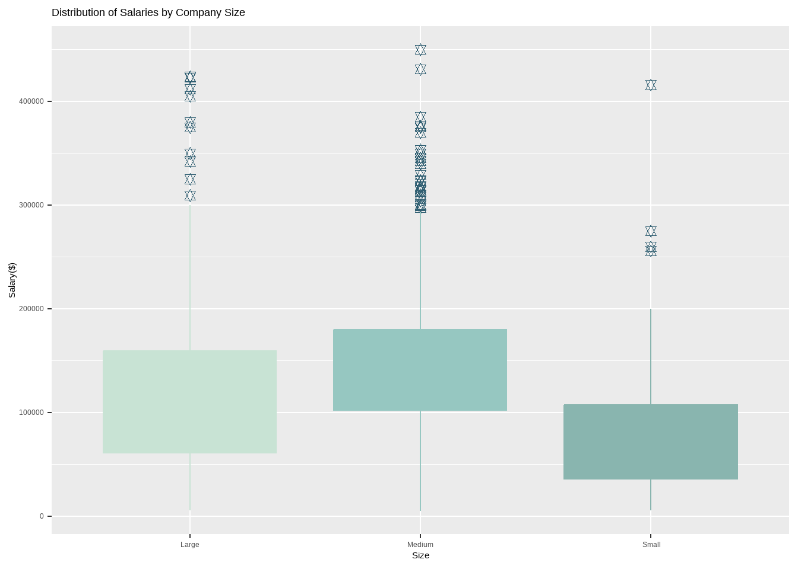
Code
cs_sl_hist
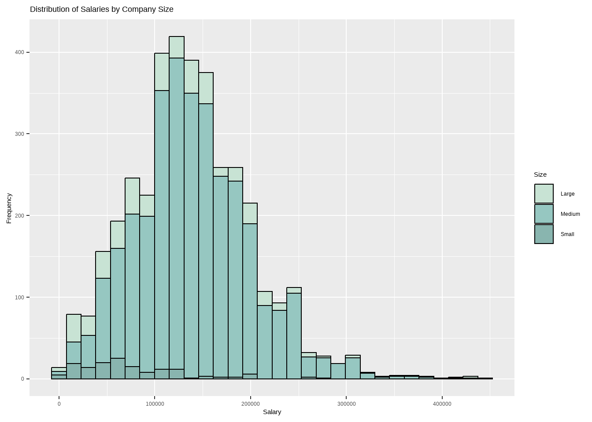
Based on the dataset, it can be observed that medium-sized companies tend to pay higher salaries compared to large-sized companies. The average salary for medium-sized companies ranges from 100k to 180k per year, while larger companies pay an average of 60k to 150k per year. This suggests that the size of the company may not always be an accurate indicator of salary levels, and that other factors may come into play such as the industry, location, and job title.
Analysis for Salary by % Remote Work
Code
options(scipen =999)options(repr.plot.width=20, repr.plot.height=10) require(gridExtra)my_palette <-c("#f0dfd1", "#f0c9a8", "#edb482")rr_sl_boxplot <-ggplot(df, aes(x=rr_categ, y=salary_in_usd)) +geom_boxplot(fill=my_palette,outlier.colour ="#FFD966", outlier.shape =11, outlier.size =2, col = my_palette, notch = F) +labs(title ="Distribution of Salaries by % Remote Work",x="Type",y="Salary($)")rr_sl_hist <-ggplot(df, aes(x=salary_in_usd, fill=rr_categ)) +geom_histogram(color="black", bins =30) +labs(title ="Distribution of Salaries by % Remote Work",x="Salary", y="Frequency",fill="Type") +scale_fill_manual(values =c("#f0dfd1", "#f0c9a8", "#edb482")) rr_sl_boxplot
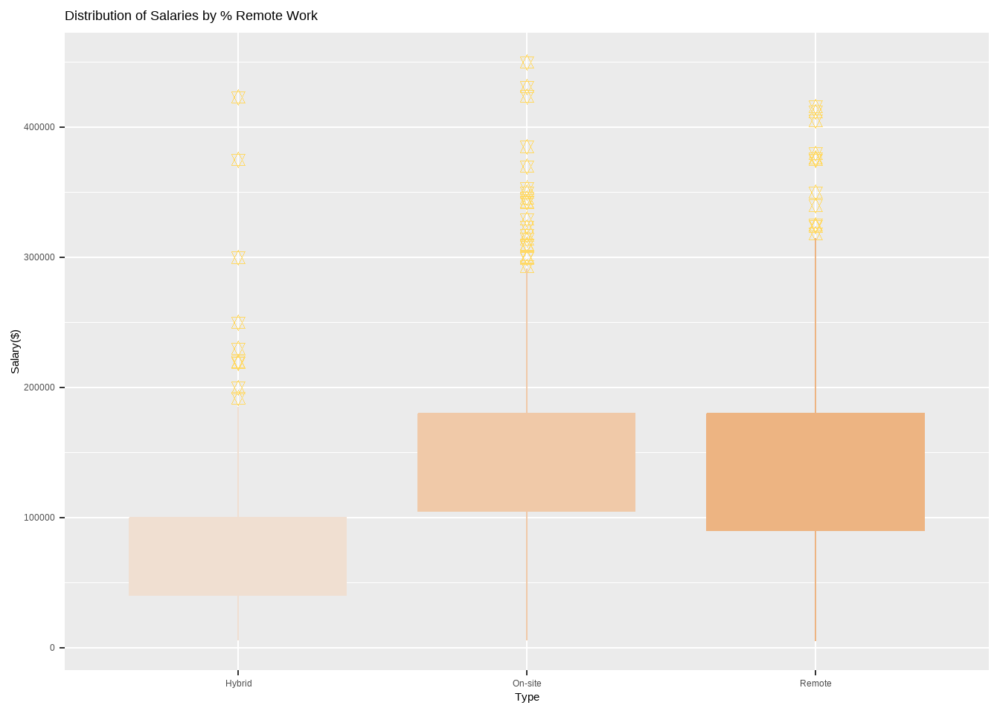
Code
rr_sl_hist
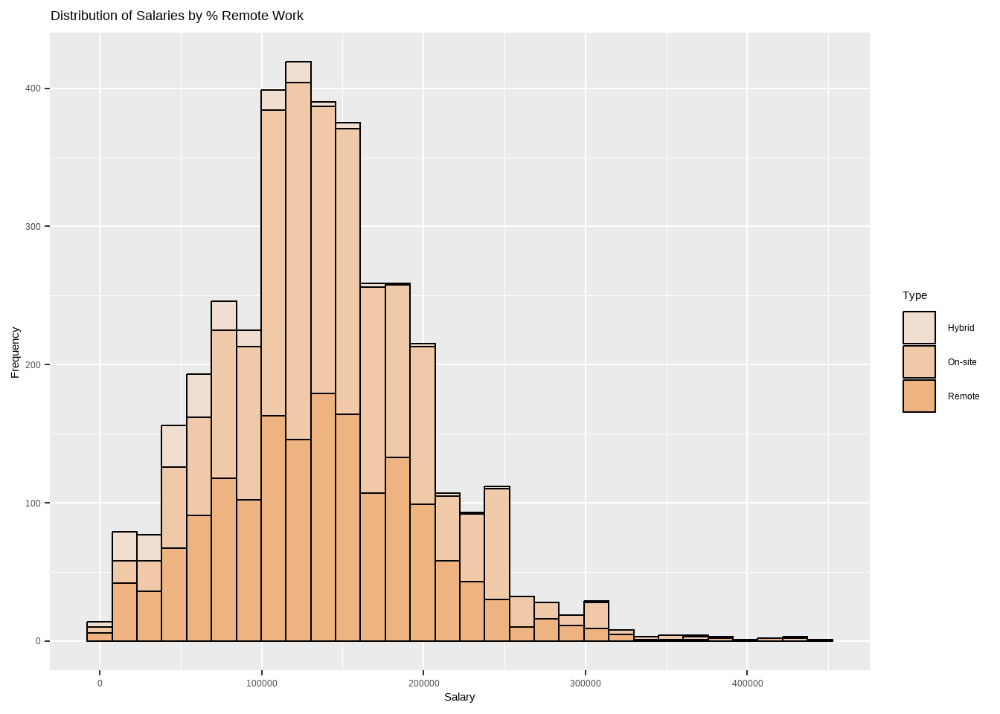
According to the dataset, the salaries of remote employees are comparable to those of on-site employees, with an average salary range of 90k to 180k USD per year. This suggests that working remotely does not necessarily have a negative impact on salary.
Conclusion
Factors that contribute to salary variations in the data science job market include:
Job Titles: Based on the dataset, job titles such as Data Engineer, Data Scientist, Data Analyst, and Machine Learning Engineer are among the most commonly observed roles, and they have different salary levels associated with them.
Seniority Levels: The dataset indicates that executive-level positions tend to have higher average salaries compared to entry-level, mid-level, and senior-level positions.
Company Sizes: The size of the company can impact salary levels. In the dataset, medium-sized companies are shown to pay higher salaries on average compared to large-sized companies.
Employment Types: Full-Time employees generally receive higher salaries compared to other employment types, while freelancers and part-time employees tend to have lower average salaries.
Remote Work: The dataset indicates that there is no significant difference in salaries between remote and on-site employees in the data science field. Remote employees can still earn competitive salaries, suggesting that remote work arrangements do not necessarily have a negative impact on salary levels.
It’s important to note that these factors interact with each other and can vary based on the specific context, industry, and location. Other factors such as education, experience, specific skills, demand-supply dynamics, and economic conditions may also contribute to salary variations in the data science job market.
Bibliography
Data Science Salaries 2023 Dataset: https://www.kaggle.com/datasets/arnabchaki/data-science-salaries-2023
R Language as programming language
Wickham, H., & Grolemund, G. (2016). R for data science: Visualize, model, transform, tidy, and import data. OReilly Media.
The R Graph Gallery-https://r-graph-gallery.com/
Source Code
---title: "Final Project"author: "Thrishul"desription: " project analyzes a dataset on the salaries, job titles, employment types, company sizes, and locations in the Data Science field, and draws conclusions about salary and patterns within the industry"date: "05/21/2023"format: html: toc: true code-fold: true code-copy: true code-tools: truecategories: - Final Project - thrishul---# Research QuestionWhat are the factors that contribute to salary variations in the data science job market, considering job titles, seniority levels, and company sizes?# IntroductionThis research project delves into the data science job market to unravel the factors contributing to salary variations. By analyzing a comprehensive dataset encompassing job titles, seniority levels, and company sizes, the study aims to shed light on the current trends and patterns within the field. Through examining the distribution of job titles, seniority levels, salaries, and employment types, valuable insights can be gained regarding the prevalent roles, requisite skills, and experience sought after in data science. Moreover, investigating the geographical locations and company sizes can offer valuable information about the leading regions and the hiring preferences of data science companies. Ultimately, this project strives to provide actionable insights to job seekers, employers, and researchers, enriching their understanding of the data science job market## Loading Necessary Packages```{r}pacman ::p_load(pacman,stats, dplyr, knitr, ggplot2, plotly, psych, gridExtra, waffle, emojifont,tidyr, tidytext, wordcloud, GGally, viridis, tidyverse, rnaturalearth, rnaturalearthdata) options(warn=-1) # warnings will be suppressed and will not be displayed in the console or any output```# Data Reading```{r}df <-read.table("_data/ds_salaries.csv", sep =",", header = T)# Nr. of instancescat("Number of instances:", nrow(df))# View datahead(df, 10)``````{r}# Inspect datacheck <-function(data) { l <-list() columns <-names(data)for (col in columns) { instances <-sum(!is.na(data[[col]])) dtypes <-class(data[[col]]) unique <-length(unique(data[[col]])) sum_null <-sum(is.na(data[[col]])) duplicates <-sum(duplicated(data)) l[[length(l) +1]] <-c(col, dtypes, instances, unique, sum_null, duplicates) } data_check <-as.data.frame(do.call(rbind, l))names(data_check) <-c("column", "dtype", "instances", "unique", "sum_null", "duplicates")return(data_check)}check(df)```# Inspecting the Data```{r}str(df)describe(df)```## Briefly Describe the DatasetThe dataset contains information about various data science roles, salaries, employment details, and company characteristics from 2021 to 2023.It allows for analysis of salary trends, comparison of salaries across job titles and experience levels, examination of the prevalence of different employment types and remote work, and exploration of the geographic distribution and company sizes within the data science field.work_year: This column indicates the year in which the salary was paid to the employee. It allows us to analyze trends in salaries over time and compare salaries between different years.experience_level: This column indicates the experience level of the employee in the job during the year. It allows us to analyze how experience level affects salaries and identify common experience levels for different job titles.employment_type: This column indicates the type of employment for the role, whether it is Contract, Freelance, Full-Time, or Part-Time. It allows us to analyze the prevalence of different employment types in the data science field.job_title: This column indicates the role worked in during the year. It allows us to analyze the most common job titles in the data science field and identify trends in job titles over time.salary: This column indicates the total gross salary amount paid to the employee in the specified currency. It allows us to analyze salary ranges, identify outliers, and compare salaries between different job titles and experience levels.salary_currency: This column indicates the currency of the salary paid as an ISO 4217 currency code. It allows us to convert salaries to a common currency for analysis and comparison.salaryinusd: This column indicates the salary in USD. It allows us to compare salaries in a common currency and analyze the impact of currency exchange rates on salaries.employee_residence: This column indicates the employee's primary country of residence during the work year as an ISO 3166 country code. It allows us to analyze the geographic distribution of employees and identify common countries of residence for different job titles and experience levels.remote_ratio: This column indicates the overall amount of work done remotely by the employee during the year. It allows us to analyze the prevalence of remote work in the data science field and identify common remote work ratios for different job titles and experience levels.company_location: This column indicates the country of the employer's main office or contracting branch. It allows us to analyze the geographic distribution of companies and identify common countries where data science jobs are located.company_size: This column indicates the median number of people that worked for the company during the year. It allows us to analyze the size distribution of companies and identify common company sizes for different job titles and experience levels.# EDA Visualisations## Univariate Analysis## Analysis for Work Year```{r}# Analysis for work_year #wy_categ <-as.factor(ifelse(df$work_year ==2020, '2020',ifelse(df$work_year ==2021, '2021', ifelse(df$work_year ==2022, '2022', ifelse(df$work_year==2023, '2023', '2020')))))options(repr.plot.width=16, repr.plot.height=8)my_palette <-c("#F8EDED", "#F6DFEB", "#E4BAD4", "#CE97B0")wy_barchart <-ggplot(data.frame(wy_categ), aes(x = wy_categ)) +geom_bar(aes(fill = wy_categ)) +scale_fill_manual(values = my_palette) +ggtitle("Bar Chart for Work Year") +xlab("Year") +ylab("Frequency") +labs(fill ="Year") +stat_count(geom ="text", aes(label =after_stat(count)), vjust =-0.5) +theme_classic() theme(plot.title =element_text(color ="black", size =20, face ="bold"),plot.subtitle =element_text(color ="#F6CD90",size =12, face ="bold"),plot.caption =element_text(face ="italic"))data <-data.frame(category=c("2020", "2021", "2022", "2023"),count=c(76, 230, 1664, 1785))# Compute percentagesdata$fraction <- data$count /sum(data$count)# Compute the cumulative percentages (top of each rectangle)data$ymax <-cumsum(data$fraction)# Compute the bottom of each rectangledata$ymin <-c(0, head(data$ymax, n=-1))# Compute label positiondata$labelPosition <- (data$ymax + data$ymin) /2# Compute a good labeldata$label <-paste0(round(data$fraction*100, 1), "%")wy_piechart <-ggplot(data, aes(ymax=ymax, ymin=ymin, xmax=4, xmin=3, fill=category)) +geom_rect() +geom_label( x=3.5, aes(y=labelPosition, label=label), size=6) +ggtitle("Pie Chart for Work Year") +scale_fill_manual(values = my_palette) +coord_polar(theta="y") +theme_void() +labs(fill ="Year") +theme(plot.title =element_text(color ="#383335", size =20, face ="bold"))wy_barchart wy_piechart```### Findings:The dataset indicates that the majority of observations, around 47.54% (1785), are from the year 2023, followed by 44.31% (1664) from 2022. A smaller percentage, 6% (230), corresponds to the year 2021, while only 2% (76) corresponds to the year 2020.## Analysis for Experience Level```{r}# Analysis for experience_level ## table(df$experience_level)el_categ <-as.factor(ifelse(df$experience_level =='EN', 'Entry-level',ifelse(df$experience_level =='MI', 'Mid-level', ifelse(df$experience_level =='SE', 'Senior-level', ifelse(df$experience_level =='EX', 'Executive-level', '')))))options(repr.plot.width=16, repr.plot.height=8)my_palette <-c("#FFF2F2", "#E5E0FF", "#8EA7E9", "#7286D3")el_barchart <-ggplot(data.frame(el_categ), aes(x = el_categ)) +geom_bar(aes(fill = el_categ)) +scale_fill_manual(values = my_palette) +ggtitle("Bar Chart for Experience Level") +xlab("Level") +ylab("Frequency") +labs(fill ="Level") +stat_count(geom ="text", aes(label =after_stat(count)), vjust =-0.5) +theme_classic() +theme(plot.title =element_text(color ="#383335", size =20, face ="bold"),plot.subtitle =element_text(color ="#F6CD90",size =12, face ="bold"),plot.caption =element_text(face ="italic"))data <-data.frame(category=c("Entry-level", "Mid-level", "Senior-level", "Executive-level"),count=c(320, 805, 2516, 114))# Compute percentagesdata$fraction <- data$count /sum(data$count)# Compute the cumulative percentages (top of each rectangle)data$ymax <-cumsum(data$fraction)# Compute the bottom of each rectangledata$ymin <-c(0, head(data$ymax, n=-1))# Compute label positiondata$labelPosition <- (data$ymax + data$ymin) /2# Compute a good labeldata$label <-paste0(round(data$fraction*100, 1), "%")el_piechart <-ggplot(data, aes(ymax=ymax, ymin=ymin, xmax=4, xmin=3, fill=category)) +geom_rect() +geom_label( x=3.5, aes(y=labelPosition, label=label), size=6) +ggtitle("Pie Chart for Experience Level") +scale_fill_manual(values = my_palette) +coord_polar(theta="y") +theme_void() +labs(fill ="Level") +theme(plot.title =element_text(color ="black", size =20, face ="bold"))el_barchartel_piechart```### Findings:The dataset includes four seniority levels, with the Senior-level category having the most representation with 67% (2516), followed by the Mid-level category with 21.4%(805). The Entry-level category is the next in terms of representation with 8.5%(320), while the Executive-level category has the least representation with only 3%(114).## Analysis for Job Title```{r}# table(df$job_title)cat("The dataset grasps", length(unique(df$job_title))," distinct job titles.")# Compute the top 20 job titles in descending ordertop20_job_titles <-head(sort(table(df$job_title), decreasing = T), 10)# Create a bar plot with plotlyplot_ly(x = top20_job_titles, y =names(top20_job_titles), type ="bar",text = top20_job_titles, orientation ='h', marker =list(color ="#2f3e46")) %>%layout(title ="Top 20 Jobs in Data Science", xaxis =list(title ="Count"), yaxis =list(title ="Job Title"))```### Findings:Among the 93 job titles present in the dataset, the most commonly occurring ones are as follows:Data Engineer, with a count of 1040 occurrences.Data Scientist, with a count of 840 occurrences.Data Analyst, with a count of 612 occurrences.Machine Learning Engineer, with a count of 289 occurrences.These job titles represent the top four most frequently observed roles in the dataset.## Analysis for Salary```{r}# Analysis for salary_in_usd #options(scipen =999)# Central Tendencies# Meancat("Mean:", mean(df$salary_in_usd))cat("\n")# Mediancat("Median:", median(df$salary_in_usd))cat("\n")# Modemode <-function(x){ ta <-table(x) tam <-max(ta)if(all(ta==tam)) mod <-NAelseif(is.numeric(x)) mod <-as.numeric(names(ta)[ta==tam])else mod <-names(ta)[ta==tam]return(mod)}cat("Mode:", mode(df$salary_in_usd))cat("\n")# Measure of Variability# Std. Devcat("Standard Deviation:", sd(df$salary_in_usd))cat("\n")# Variancecat("Variance:", var(df$salary_in_usd))cat("\n")# IQRcat("Interquartile Range:") quantile(df$salary_in_usd)options(repr.plot.width=18, repr.plot.height=6) require(gridExtra)salary_hist <-ggplot(df, aes(x = salary_in_usd)) +geom_histogram(color ='#5c082c', fill ='#F5B0CB', bins=30) +labs(title ="Histogram for Salary ($)",x ="Salary",y ="Count") +theme_classic() +theme(plot.title =element_text(color ="#383335", size =20, face ="bold"),plot.subtitle =element_text(color ="#F5B0CB",size =12, face ="bold"),plot.caption =element_text(face ="italic"))salary_boxplot <-ggplot(df, aes_string(x = df$salary_in_usd)) +geom_boxplot(outlier.colour ="#F5B0CB", outlier.shape =11, outlier.size =2, col ="#5c082c", notch = F) +labs(title ="Box Plot for Salary ($)",x ="Salary") +theme_classic() +theme(plot.title =element_text(color ="#383335", size =20, face ="bold"))salary_histsalary_boxplotplot(density(df$salary_in_usd),col="#F5B0CB",main="Density Plot for Salary",xlab="Salary",ylab="Density")polygon(density(df$salary_in_usd),col="#F5B0CB")``````{r}# Define the summary statisticsmean_val <-137570.4median_val <-135000mode_val <-100000std_dev <-63055.63variance <-3976011879quantiles <-c(5132, 95000, 135000, 175000, 450000)# Create a data frame to store the summary statisticssummary_df <-data.frame(Measure =c("Mean", "Median", "Mode", "Standard Deviation", "Variance", "Interquartile Range"),Value =c(mean_val, median_val, mode_val, std_dev, variance, paste(quantiles, collapse =" ")))# Print the summary statistics in a boxprint(summary_df, row.names =FALSE)```### Findings:The range of salaries in the Data Science domain is between 5,132 USD and 450,000 USD. Moreover, the average or mean salary in this field is around 137,570 USD. This information suggests that there is a wide range of salaries in the field of Data Science, with some individuals earning significantly more than others.## Analysis for Employment Type```{r}# Analysis for employment_type ## table(df$employment_type)et_categ <-as.factor(ifelse(df$employment_type =="CT", "Contract",ifelse(df$employment_type =="FL", "Freelance", ifelse(df$employment_type =="FT", "Full-Time", ifelse(df$employment_type =="PT", "Part-Time", "")))))options(repr.plot.width=16, repr.plot.height=8)my_palette <-c("#FEDEFF", "#93C6E7", "#AEE2FF", "#B9F3FC")et_barchart <-ggplot(data.frame(et_categ), aes(x = et_categ)) +geom_bar(aes(fill = et_categ)) +scale_fill_manual(values = my_palette) +ggtitle("Bar Chart for Employment Type") +xlab("Type") +ylab("Frequency") +labs(fill ="Level") +stat_count(geom ="text", aes(label =after_stat(count)), vjust =-0.5) +theme_classic() +theme(plot.title =element_text(color ="#383335", size =20, face ="bold"),plot.subtitle =element_text(color ="#F6CD90",size =12, face ="bold"),plot.caption =element_text(face ="italic"))data <-data.frame(category=c("Contract", "Freelance", "Full-Time", "Part-Time"),count=c(10, 10, 3718, 17))# Compute percentagesdata$fraction <- data$count /sum(data$count)# Compute the cumulative percentages (top of each rectangle)data$ymax <-cumsum(data$fraction)# Compute the bottom of each rectangledata$ymin <-c(0, head(data$ymax, n=-1))# Compute label positiondata$labelPosition <- (data$ymax + data$ymin) /2# Compute a good labeldata$label <-paste0(round(data$fraction*100, 1), "%")et_piechart <-ggplot(data, aes(ymax=ymax, ymin=ymin, xmax=4, xmin=3, fill=category)) +geom_rect() +geom_label( x=3.5, aes(y=labelPosition, label=label), size=6) +ggtitle("Pie Chart for Employment Type") +scale_fill_manual(values = my_palette) +coord_polar(theta="y") +theme_void() +labs(fill ="Type") +theme(plot.title =element_text(color ="#383335", size =20, face ="bold"))et_barchartet_piechart```### Findings:The dataset includes data on four types of employment: Contract, Freelance, Full-Time, and Part-Time. Based on the graphs, it is clear that the majority of people who contributed to the dataset are employed on a Full-Time basis. This information indicates that Full-Time employment is the most common form of employment for those in the Data Science field.## Analysis for % Remote Work```{r}# Analysis for remote_ratio ## table(df$remote_ratio)rr_categ <-as.factor(ifelse(df$remote_ratio ==0, "On-site",ifelse(df$remote_ratio ==50, "Hybrid", ifelse(df$remote_ratio ==100, "Remote", ""))))options(repr.plot.width=16, repr.plot.height=8)my_palette <-c("#f0dfd1", "#f0c9a8", "#edb482")rr_barchart <-ggplot(data.frame(rr_categ ), aes(x = rr_categ)) +geom_bar(aes(fill = rr_categ )) +scale_fill_manual(values = my_palette) +labs(fill ="Type") +stat_count(geom ="text", aes(label =after_stat(count)), vjust =-0.5) +labs(title ="Bar Chart for % Remote Work",x ="Type", y="Frequency") +theme_classic() +theme(plot.title =element_text(color ="#383335", size =20, face ="bold"),plot.subtitle =element_text(color ="#F6CD90",size =12, face ="bold"),plot.caption =element_text(face ="italic"))data <-data.frame(category=c("On-site", "Hybrid", "Remote"),count=c(1923, 189, 1643))# Compute percentagesdata$fraction <- data$count /sum(data$count)# Compute the cumulative percentages (top of each rectangle)data$ymax <-cumsum(data$fraction)# Compute the bottom of each rectangledata$ymin <-c(0, head(data$ymax, n=-1))# Compute label positiondata$labelPosition <- (data$ymax + data$ymin) /2# Compute a good labeldata$label <-paste0(round(data$fraction*100, 1), "%")rr_piechart <-ggplot(data, aes(ymax=ymax, ymin=ymin, xmax=4, xmin=3, fill=category)) +geom_rect() +geom_label( x=3.5, aes(y=labelPosition, label=label), size=6) +ggtitle("Pie Chart for % Remote Work") +scale_fill_manual(values = my_palette) +coord_polar(theta="y") +theme_void() +labs(fill ="Type") +theme(plot.title =element_text(color ="#383335", size =20, face ="bold"))rr_barchartrr_piechart```### Findings:According to the dataset, approximately 51.2% (1923 observations) of individuals are working On-site, which means they are working at a physical location provided by their employer. Around 43.8% (1643 observations) of people are working in remote mode. Finally, 5% (189 observations) of individuals are working hybrid. This information suggests that a significant portion of the individuals in the Data Science field have some level of flexibility in their work arrangements.## Analysis for Companies Size```{r}# Analysis for company_size ## table(df$company_size)cs_categ <-as.factor(ifelse(df$company_size =="L", "Large",ifelse(df$company_size =="M", "Medium", ifelse(df$company_size =="S", 'Small', ''))))options(repr.plot.width=16, repr.plot.height=8)my_palette <-c("#C8E3D4", "#96C7C1", "#89B5AF")cs_barchart <-ggplot(data.frame(cs_categ ), aes(x = cs_categ)) +geom_bar(aes(fill = cs_categ )) +scale_fill_manual(values = my_palette) +ggtitle("Bar Chart for Companies Size") +xlab("Size") +ylab("Frequency") +labs(fill ="Type") +stat_count(geom ="text", aes(label =after_stat(count)), vjust =-0.5) +theme_classic() +theme(plot.title =element_text(color ="#383335", size =20, face ="bold"),plot.subtitle =element_text(color ="#F6CD90",size =12, face ="bold"),plot.caption =element_text(face ="italic"))data <-data.frame(category=c("Large", "Medium", "Small"),count=c(454, 3153, 148))# Compute percentagesdata$fraction <- data$count /sum(data$count)# Compute the cumulative percentages (top of each rectangle)data$ymax <-cumsum(data$fraction)# Compute the bottom of each rectangledata$ymin <-c(0, head(data$ymax, n=-1))# Compute label positiondata$labelPosition <- (data$ymax + data$ymin) /2# Compute a good labeldata$label <-paste0(round(data$fraction*100, 1), "%")cs_piechart <-ggplot(data, aes(ymax=ymax, ymin=ymin, xmax=4, xmin=3, fill=category)) +geom_rect() +geom_label( x=3.5, aes(y=labelPosition, label=label), size=6) +ggtitle("Pie Chart for Companies Size") +scale_fill_manual(values = my_palette) +coord_polar(theta="y") +theme_void() +labs(fill ="Size") +theme(plot.title =element_text(color ="#383335", size =20, face ="bold"))cs_barchartcs_piechart```### Findings:A large portion of the companies, around 84% (3153 observations), are categorized as Medium size. Additionally, 12.1% (454 observations) of the companies are classified as Large size, while only 3.9% (148 observations) are considered Small size. This implies that the majority of the companies in the dataset have a medium-sized workforce.## Analysis for Company Location```{r}# Analysis for company_location ## table(df$company_location)cat("The dataset grasps", length(unique(df$company_location))," distinct company locations.")# Compute the top 20 company locations in descending ordertop20_company_location <-head(sort(table(df$company_location), decreasing = T), 20)# Create a bar plot with plotlyplot_ly(x = top20_company_location, y =names(top20_company_location), type ="bar",text = top20_job_titles, orientation ='h', marker =list(color ="#0d1b2a ")) %>%layout(title ="Top 20 Data Science Company Locations", xaxis =list(title ="Count"), yaxis =list(title ="Company Location"))```### Findings:The dataset contains information on 72 unique company locations. Upon analyzing the data, it was found that the majority of companies are based in the United States, with the highest number of observations. Great Britain, Canada, Spain, and India are the next most common locations where companies are based, respectively.## Analysis for Employees Residence```{r}# Analysis for employee_residence ## table(df$employee_residence)cat("The dataset grasps", length(unique(df$employee_residence))," distinct employees residence.")# Compute the top 20 employees residence in descending ordertop20_employee_residence <-head(sort(table(df$employee_residence), decreasing = T), 20)# Create a bar plot with plotlyplot_ly(x = top20_employee_residence, y =names(top20_employee_residence), type ="bar",text = top20_job_titles, orientation ='h', marker =list(color ="#0d1b2a")) %>%layout(title ="Top 20 Data Science Employees Residence", xaxis =list(title ="Count"), yaxis =list(title ="Employee Residence"))```### Findings:The dataset includes information on the primary country of residence for employees, with a total of 78 countries represented. The highest number of employees reside in the United States, followed by Great Britain, Canada, Spain, and India, indicating that these countries have a higher concentration of data science jobs or are preferred locations for employees in this field.# Multivariate Analysis## Analysis for Salary by Year```{r}options(scipen =999)options(repr.plot.width=20, repr.plot.height=10) require(gridExtra)my_palette <-c("#94d2bd", "#c8b6ff", "#ffb3c6", "#fb6f92")wy_sl_boxplot <-ggplot(df, aes(x=wy_categ, y=salary_in_usd)) +geom_boxplot(fill=my_palette,outlier.colour ="#001219", outlier.shape =11, outlier.size =2, col = my_palette, notch = F) +labs(title ="Distribution of Salaries by Year",x="Year",y="Salary($)") wy_sl_hist <-ggplot(df, aes(x=salary_in_usd, fill=wy_categ)) +geom_histogram(color="black", bins =30) +labs(title ="Distribution of Salaries by Year",x="Salary", y="Frequency",fill="Year") +scale_fill_manual(values =c("#ffe5ec", "#ffb3c6", "#ff8fab", "#fb6f92")) wy_sl_boxplotwy_sl_hist```The dataset clearly indicates that the salaries in the Data Science domain have been increasing year on year, with a significant rise in 2022. This trend is expected to continue in 2023 as well.## Analysis for Salary by Experience Level```{r}options(scipen =999)options(repr.plot.width=20, repr.plot.height=10) require(gridExtra)my_palette <-c("#a8dadc", "#84a98c", "#52796f", "#2f3e46")el_sl_boxplot <-ggplot(df, aes(x=el_categ, y=salary_in_usd)) +geom_boxplot(fill=my_palette,outlier.colour ="#84a98c", outlier.shape =11, outlier.size =2, col = my_palette, notch = F) +labs(title ="Distribution of Salaries by Experience Level",x="Level",y="Salary($)") el_sl_hist <-ggplot(df, aes(x=salary_in_usd, fill=el_categ)) +geom_histogram(color="black", bins =30) +labs(title ="Distribution of Salaries by Experience Level",x="Salary", y="Frequency",fill="Level") +scale_fill_manual(values =c("#a8dadc", "#84a98c", "#52796f", "#2f3e46")) el_sl_boxplotel_sl_hist```Dataset indicates that the average executive-level salaries are higher than those of entry-level, mid-level, and senior-level positions with an average of 140k to more than 200k per year, while senior level salaries are in between 120k to 180k.## Analysis for Salary by Employment Type```{r}options(scipen =999)options(repr.plot.width=20, repr.plot.height=10) require(gridExtra)my_palette <-c("#03045e", "#023e8a", "#0096c7", "#48cae4")et_sl_boxplot <-ggplot(df, aes(x=et_categ, y=salary_in_usd)) +geom_boxplot(fill=my_palette,outlier.colour ="#023e8a", outlier.shape =11, outlier.size =2, col = my_palette, notch = F) +labs(title ="Distribution of Salaries by Employment Type",x="Type",y="Salary($)")et_sl_hist <-ggplot(df, aes(x=salary_in_usd, fill=et_categ)) +geom_histogram(color="black", bins =30) +labs(title ="Distribution of Salaries by Employment Type",x="Salary", y="Frequency",fill="Type") +scale_fill_manual(values =c("#03045e", "#023e8a", "#0096c7", "#48cae4")) et_sl_boxplotet_sl_hist```The data reveals that full-time employees are paid higher salaries compared to other employment types such as contract, freelance and part-time. Freelancers have an average annual salary of around 50 to 60k USD, while most number of part-time employees receive less than 50k USD per year.## Analysis for Salary by Company Size```{r}options(scipen =999)options(repr.plot.width=20, repr.plot.height=10) require(gridExtra)my_palette <-c("#C8E3D4", "#96C7C1", "#89B5AF")cs_sl_boxplot <-ggplot(df, aes(x=cs_categ, y=salary_in_usd)) +geom_boxplot(fill=my_palette,outlier.colour ="#305F72", outlier.shape =11, outlier.size =2, col = my_palette, notch = F) +labs(title ="Distribution of Salaries by Company Size",x="Size",y="Salary($)") cs_sl_hist <-ggplot(df, aes(x=salary_in_usd, fill=cs_categ)) +geom_histogram(color="black", bins =30) +labs(title ="Distribution of Salaries by Company Size",x="Salary", y="Frequency",fill="Size") +scale_fill_manual(values =c("#C8E3D4", "#96C7C1", "#89B5AF")) cs_sl_boxplotcs_sl_hist```Based on the dataset, it can be observed that medium-sized companies tend to pay higher salaries compared to large-sized companies. The average salary for medium-sized companies ranges from 100k to 180k per year, while larger companies pay an average of 60k to 150k per year. This suggests that the size of the company may not always be an accurate indicator of salary levels, and that other factors may come into play such as the industry, location, and job title.## Analysis for Salary by % Remote Work```{r}options(scipen =999)options(repr.plot.width=20, repr.plot.height=10) require(gridExtra)my_palette <-c("#f0dfd1", "#f0c9a8", "#edb482")rr_sl_boxplot <-ggplot(df, aes(x=rr_categ, y=salary_in_usd)) +geom_boxplot(fill=my_palette,outlier.colour ="#FFD966", outlier.shape =11, outlier.size =2, col = my_palette, notch = F) +labs(title ="Distribution of Salaries by % Remote Work",x="Type",y="Salary($)")rr_sl_hist <-ggplot(df, aes(x=salary_in_usd, fill=rr_categ)) +geom_histogram(color="black", bins =30) +labs(title ="Distribution of Salaries by % Remote Work",x="Salary", y="Frequency",fill="Type") +scale_fill_manual(values =c("#f0dfd1", "#f0c9a8", "#edb482")) rr_sl_boxplotrr_sl_hist```According to the dataset, the salaries of remote employees are comparable to those of on-site employees, with an average salary range of 90k to 180k USD per year. This suggests that working remotely does not necessarily have a negative impact on salary.# ConclusionFactors that contribute to salary variations in the data science job market include:Job Titles: Based on the dataset, job titles such as Data Engineer, Data Scientist, Data Analyst, and Machine Learning Engineer are among the most commonly observed roles, and they have different salary levels associated with them.Seniority Levels: The dataset indicates that executive-level positions tend to have higher average salaries compared to entry-level, mid-level, and senior-level positions.Company Sizes: The size of the company can impact salary levels. In the dataset, medium-sized companies are shown to pay higher salaries on average compared to large-sized companies. Employment Types: Full-Time employees generally receive higher salaries compared to other employment types, while freelancers and part-time employees tend to have lower average salaries.Remote Work: The dataset indicates that there is no significant difference in salaries between remote and on-site employees in the data science field. Remote employees can still earn competitive salaries, suggesting that remote work arrangements do not necessarily have a negative impact on salary levels.It's important to note that these factors interact with each other and can vary based on the specific context, industry, and location. Other factors such as education, experience, specific skills, demand-supply dynamics, and economic conditions may also contribute to salary variations in the data science job market.# BibliographyData Science Salaries 2023 Dataset: https://www.kaggle.com/datasets/arnabchaki/data-science-salaries-2023R Language as programming languageWickham, H., & Grolemund, G. (2016). R for data science: Visualize, model, transform, tidy, and import data. OReilly Media.The R Graph Gallery-https://r-graph-gallery.com/